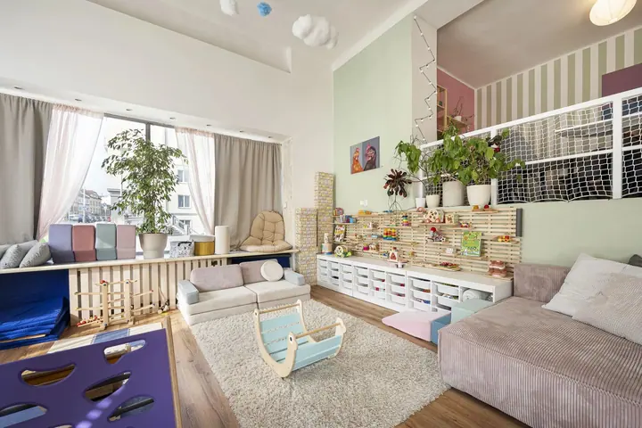
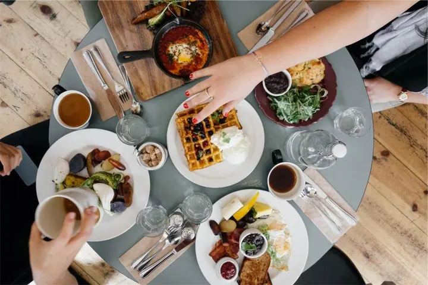
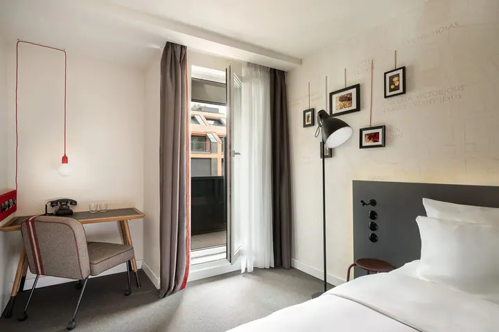

Focení interiérů a architektury
Fotím byty, hotely, resorty, krátkodobé pronájmy i komerční prostory tak, aby vynikla jejich atmosféra, detaily i charakter. Každý záběr pečlivě komponuji, aby fotky působily přirozeně a zároveň působivě.





Jmenuji se Martina Marková a fotím interiéry, architekturu a ubytování. Přes deset let jsem pracovala v hotelnictví, a tak dobře vím, co hosté na fotkách hledají. Bydlím v Praze, ale za vámi ráda přijedu kamkoliv po Česku i do zahraničí.
Více o mně
„Přetvořím každý interiér v poutavý příběh, který osloví vaše klienty.“
— Martina Marková
Fotím byty, hotely, resorty, krátkodobé pronájmy i komerční prostory tak, aby vynikla jejich atmosféra, detaily i charakter. Každý záběr pečlivě komponuji, aby fotky působily přirozeně a zároveň působivě.
Pro hotely, bary a restaurace fotím i to, co hosté dostanou na stůl. Fotky pak zapadnou do stejného příběhu jako samotný prostor.
Pomůžu vám s prezentací na webu i sociálních sítích, s rezervačními kanály a s komunikací, která osloví ideální hosty. Před focením umím prostor také nastylovat, aby na fotkách působil útulně.
Realitním kancelářím a majitelům krátkodobých pronájmů připravím 2D schémata a fotorealistické 3D vizualizace. Vaši klienti a hosté tak dřív uvidí, že je vaše nemovitost ta pravá.
Fotografie jsou ilustrační
Přes deset let jsem v hotelnictví pracovala pro velké značky jako Marriott a Radisson Hotel Group, ale i pro menší hotely. Mým úkolem bylo pomáhat jim vyniknout přes sociální sítě, PR, kampaně a kreativní obsah.
Díky tomu rozumím, jak prostor nafotit, aby vynikl jeho charakter a přilákal zájemce. Specializuji se na interiéry, architekturu a ubytování pro online prezentaci, a když chcete, pomůžu vám i s marketingem.
Ať jde o hotel, startup nebo lokální kreativní značku, chci vytvořit vizuální příběh, který zaujme a zůstane v paměti. Termín focení domluvíme tak, aby se hodil nám oběma.
Nejraději komunikuji e-mailem nebo přes formulář. Stačí popsat prostor a k čemu fotky potřebujete.
Domluvíme rozsah, typ balíčku a termín. Když je potřeba, prostor před focením nastylujeme, aby působil útulně.
Přijedu k vám a každý záběr pečlivě zkomponuji tak, aby vynikla atmosféra i detaily.
Fotky zpracuji jako HDR včetně retuše, upravím světlo a barvy a předám vám je připravené na web i sociální sítě.
Bydlím v Praze, kde je doprava v ceně balíčku. Ráda ale přijedu kamkoliv po České republice a jsem otevřená i focení v zahraničí.
Balíčky focení interiérů a ubytování začínají na 3 000 Kč a podle rozsahu se pohybují až do 10 000 Kč. Přesnou cenu vám řeknu, až budu vědět, o jaký prostor jde.
HDR fotografie (počet podle typu balíčku), postprodukce včetně retuše a doprava po Praze zdarma. Navíc si můžete objednat staging nebo marketingovou konzultaci.
Často jsem se dvěma malými dětmi, se kterými se neplánovaně telefonovat moc nedá. Proto preferuji e-mail, odpovím vám co nejdřív.